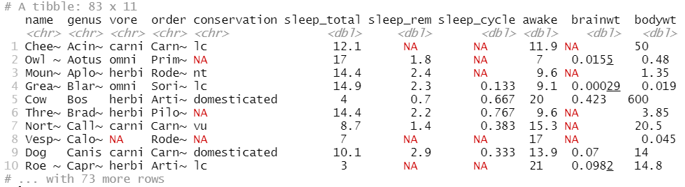

Descriptive part
The Analysis, Data Processing and Business Application course is composed of three modules.
Because of the large amount of connected objects in our society, it is important to know how
efficiently collect and process data.
The first module concerns the Semantic Web in which
we got a glimpse of the importance of making search engines more ingenious to manage web data as finely as possible.
The second module, is about Big Data in which we had lectures and a project
on the big data approach and the use of the R programming language for statistical data processing.
The third module is about Software Engineering
for which we had an overview of project management tools and methods (Jira, Jenkins...) as well as an awareness of the Agile Scrum method.
In this page you will find all the information about the different modules and the practical work and projects realized.
I detail the tasks performed, for what purpose.
I also highlight the knowledge and skills acquired during each module.
Data processing and Analysis : Big Data
The Big Data module was new for me, but interesting. Indeed, during the lectures, I was able to be sensitized to
the importance of data processing, and ways to be able to analyze the data collected for different uses.
In order to put into practice the concepts introduced, we used the R language and its Rstudio interface.
R is a programming language and free software for statistics and data science.
Through tutorials, I was able to familiarize myself with the study of datasets, the different ways of selecting
desired data until their possible display on a graph.
You can found below an extract of the "msleep" dataset that we studied during the sessions.

A great particularity of the R is the iterative loops: they are only used very little, knowing that many libraries
offer functions that can carry out processing that one is used to doing with loops, especially in other script languages.
Software Engineering
The goal of this course (realized in autonomy) was to give us the main project management methods and tools
that are useful when we do software development. We were an overview of tools like Jenkins, Git, Jira but also,
we saw the Agile Scrum method. It allows us to use one or more methods for some projects of the year.
Indeed, for instance we were able to use the Jira software tool for the Service Oriented Architecture project.
It was interesting to use because thanks to this tool we could create user stories, defined the tasks for
each user story, their duration, who is in charge of each task but also the sprint planning.
The main challenge was to appropriate the tool in a short period of time and apply this kind of tool to
a software project for the first time. It was a success for the SOA project because the scheduled planning was respected.
Technical part
Data processing and Analysis : R project
The most challenge of the Big Data module was the R project. Indeed, we had to select ourselves
a dataset to analyse. My partner and I decided to study the results of the wishes and admissions
on the Parcoursup platform of the graduates of the year 2019. It was interesting to have an overview
on the most requested fields or the results of assignments within the different study programmes
proposed in the Toulouse region for example.For some analyses, we cross-referenced 2019 data with 2018 data.
Datasets are available
here
and
here.
From my point of view, it was the opportunity for me to manipulate R in autonomy and to be free to choose the study case.
This project allows me to develop the good practices in terms of the selection of charts, the consistency of the displayed
data.
Moreover, it is important to have a critical look on the relevance of open source data. Sample plots of the data are
an important step when studying a dataset. Indeed, a person can draw conclusions on a graph that does not correspond to
what the author set. This point of vigilance allowed us to have a critical view on the exploitation of our dataset.
Below is our study report.
Web Semantic
In this course composed of two lecture and two labs, I was able to discover the semantic web and its importance today.
Indeed, it is necessary to be able to have machines that can efficiently interpret the requests of web users knowing
the multitude of data and users who regularly believe. In this perspective, I was able to be sensitized to the
representation of data with the descriptive language RDF which will allow to define structures thanks to the
"triplets" (subject + predicate + object).
In addition, I was able to discover and design ontologies (light and heavy), which are a formal, explicit specification
of a shared conceptualization.
Through the first laboratory I was able to design an ontology of the weather using the Protected software.
I created different classes, subclasses, properties and individuals to populate my ontology and then I used
a reasoner to deduce the links between individuals.
The second lab was to build a semantic-aware application. Indeed, we use our ontology to annotate an open data dataset, opened by the city of Aarhus in Denmark.
These data are collected from temperature sensors, and they are stored in CSV files, which is at 3 stars on the Linked Data hierarchy.
We needed to convert it to 5-star data by using the ontology of the first lab.
You can found our report below which describe the work realized.
Analytical part
All the courses in this UF had no direct links between them. All the concepts mentioned were mostly new to me,
having not followed the INSA’s IT and network field.
For “Software Engineering”, I already have experience with Git and the Agile method. This course was useful for
the projects of the year, particularly for our innovative project and the SOA project.
For the “Processing Semantic Data” skillset, I was able to absorb the notions of semantics that are important today
with the amount of information and data at the web level. The labs were particularly informative to deepen
the notion of ontology, very important for the semantic web.
For the “Data Processing and Analysis” class, I was really interested in learning the R language as
a new tool for data analysis. I think we did not have enough time to see the different ways to graphically
represent the desired data, but I have acquired the basic knowledge of the R language.